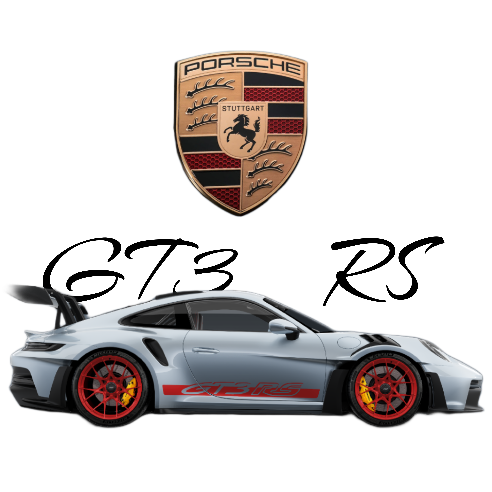

PORSCHE
EVOLUTION OF PORSCHE
911 GT3 RS

The Porsche 911 GT3 RS has a rich evolutionary history that spans multiple generations, each incorporating advancements in technology, aerodynamics, and performance. Here's an overview of the evolution of the Porsche 911 GT3 RS
996 Generation (2003-2005)

- The first Porsche 911 GT3 RS was introduced in 2003 as a track-focused variant of the 996-generation 911.
- It featured a naturally aspirated 3.6-liter flat-six engine producing around 375 horsepower.
- The 996 GT3 RS had various weight-saving measures, including a stripped-out interior, lightweight body panels, and carbon fiber components.
- Limited production numbers made it quite rare and desirable among enthusiasts.
997 Generation (2007-2011)

- The second iteration of the GT3 RS debuted in 2007 based on the 997-generation 911 platform.
- It featured an upgraded 3.8-liter flat-six engine producing approximately 415 horsepower.
- Aerodynamic enhancements, including a larger rear wing and revised front splitter, improved downforce.
- The 997 GT3 RS continued the tradition of being a focused track machine with a manual gearbox and rear-wheel drive.
997.2 Generation (2010-2011)

- In 2010, Porsche introduced the 997.2 GT3 RS, further refining the model.
- Power output was increased to around 450 horsepower from the same 3.8-liter flat-six engine.
- Improvements in suspension and chassis dynamics enhanced handling and agility.
- Limited production numbers and special editions, such as the GT3 RS 4.0, made it highly sought after.
991 Generation (2015-2018)

- The 991-generation GT3 RS debuted in 2015, featuring a naturally aspirated 4.0-liter flat-six engine producing 500 horsepower.
- Advanced aerodynamics, including a larger rear wing and aggressive bodywork, improved downforce and stability at high speeds.
- Carbon fiber components and weight-saving measures contributed to enhanced performance and agility.
- Technological advancements, such as rear-wheel steering and dynamic engine mounts, further improved handling and responsiveness.
991.2 Generation (2018-2019)

- The 991.2 GT3 RS received minor updates over its predecessor, including revised suspension tuning and aerodynamics.
- Power output remained the same at 500 horsepower, but improvements in chassis dynamics and electronic systems enhanced overall performance.
- Limited production and special editions, such as the GT3 RS Weissach Package, offered even greater performance and exclusivity.
992 Generation (2022- Present)

- The latest iteration of the GT3 RS is based on the 992-generation 911 platform, expected to continue the tradition of exceptional performance and track-focused design.
- Details about the 992 GT3 RS, including powertrain specifications and performance enhancements, are yet to be officially confirmed by Porsche.
Throughout its evolution, the Porsche 911 GT3 RS has remained a benchmark for track-focused performance cars, blending raw driving thrills with cutting-edge technology and engineering prowess. Each generation builds upon the legacy of its predecessors, pushing the boundaries of what is achievable in a road-legal track car.